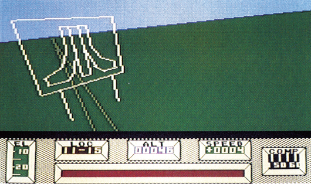
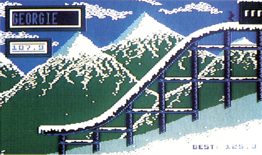
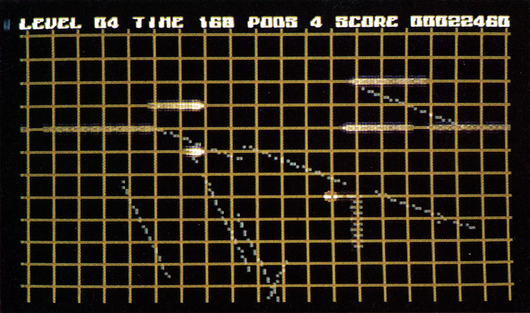
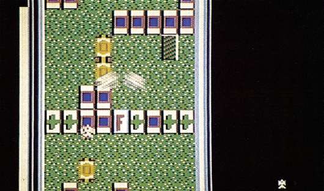
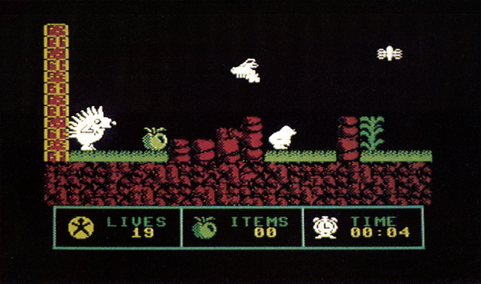

Der C 16 spielt mit
Wenn man den jüngsten Statistiken glauben darf, werden die meisten Computer als Spielemaschinen gekauft. Denn ein Heimcomputer kostet nur wenig mehr als ein Video-Spiel, kann dafür aber ab und zu auch für vernünftige Anwendungen wie Textverarbeitung eingesetzt werden. Inzwischen gibt es auch für den C 16 genügend gute Spielprogramme, die diesen Kaufgrund rechtfertigen.
Der C 16 und der Plus/4 zählen ja eigentlich nicht zu den begnadeten Spielecomputern. Gerade der C 16, der nur wenig Speicherplatz und keine Sprites bietet, hat es schwer, sich unter Spielefreaks zu behaupten. Daß man mit diesem Gerät trotzdem gut spielen kann und auf dem Plus/4 auch Programme in C 64-Qualität erreichen kann, beweisen einige Erscheinungen der letzten Wochen.
Der Name »Mercenary« ist C 64-Besitzern ein Begriff. Dieses Action-Strategie-Spiel erschien vor gut einem Jahr und wurde von Presse wie Käufern sehr positiv aufgenommen. Seit einiger Zeit ist nun auch eine Plus/4-Version dieses Spiels im Handel.
Vektor-Grafik auf dem Plus/4
Bei Tests in der Redaktion lief das Programm auch auf einem C 16 mit 64 KByte Speichererweiterung.
Sie übernehmen die Rolle eines intergalaktischen Söldners, der auf dem Planeten Targ abstürzt. Das Spielziel ist damit festgelegt: Nichts wie weg von diesem fremden Planeten. Dummerweise reicht Ihr Geld bei weitem nicht, um ein weltraumtüchtiges Fahrzeug zu chartern. Aber die Rettung naht: Auf Targ herrscht nämlich Krieg zwischen den Playars und den Mechanoiden. Beide Seiten interessieren sich nun für Ihre Söldner-Dienste und bieten Ihnen hohe Summen für Gegenstände aus Feindeshand, erfolgreiche Sabotageakte und Entführungen der gegnerischen Kommandeure. Sie müssen nun also geschickt die beiden Seiten gegeneinander ausspielen, um so schnell zu viel Geld zu kommen.
Mercenary verwendet eine sogenannte 3D-Vektor-Grafik. Alle Objekte werden dargestellt, als ob sie aus einem Drahtgitter bestehen würden. Diese Form von Grafik kann sehr schnell bearbeitet werden, wodurch sich ein guter, dreidimensionaler Effekt bei den Bewegungen ergibt. Für jeden, der eine 64-KByte-Speichererweiterung zum C 16 sein eigen nennt, ist Mercenary eines der besten erhältlichen Spiele.

| Titel | Mercenary |
|---|---|
| Spielidee | 12/15 |
| Grafik | 12/15 |
| Sound | 7/15 |
| Schwierigkeit | 11/15 |
| Motivation | 12/15 |
| Besonderheiten | 3D-Grafik |
| Hersteller | Novagen |
| Preis | 39 Mark (K.) |
| Bezugsquelle | Ifl, Sonntagstr. 20, 2152 Horneburg |
Auf dem C 64 sind Sportspiele sehr beliebt. Namen wie »Winter Games« und »Hypersports« sind wohl allen C 64-Besitzern bekannt. Seit kurzem dürfen sich auch die C 16-Besitzer über ein hochqualitatives Sportspiel freuen. »Winter Olympiade« heißt das Spiel, das übrigens dem C 16 eines deutschen Programmierers entsprang.
Nach einem Menü, bei dem sich die bis zu vier Spieler unter anderem ihre Landesfarben aussuchen dürfen, geht es gleich mit den sechs Disziplinen los. Als erstes steht Biathlon auf dem Programm. Mit rhythmischen Joystick-Bewegungen bringen Sie Ihren Langläufer in Fahrt. An den einzelnen Zielen müssen Sie Ihr Gewehr laden und dann die einzelnen Zielscheiben treffen, was gar nicht mal so einfach ist. Wenn Sie die Strecken hinter sich gebracht haben, werden die Medallien verteilt und auf geht's zum Slalom. In rasanter 3D-Grafik sehen Sie sich selbst den Berg auf Skiern herunterrasen. Bäume können dem Ganzen aber ein jähes Ende bereiten. Nach dieser Raserei wäre ein kleiner Luftsprung nicht schlecht. Also begeben Sie sich auf die Schanze zum Skispringen. Neben Reaktion und Geschwindigkeit ist die richtige Körperhaltung entscheidend für einen guten, weiten Sprung. Die nächste Disziplin ist das Bobfahren, bei dem die Strecke so schnell wie möglich, aber auch ohne Unfall, durchfahren werden muß. Zum Abschluß steht die Abfahrt auf dem Programm, die grafisch dem Slalom sehr ähnlich ist.
Beeindruckend sind am Programm die vielen unterschiedlichen Grafiken und die Animation der Spielfiguren. Für Kassetten-Besitzer ist das Spiel allerdings etwas umständlich, da alle Disziplinen von Datasette einzeln geladen werden, was aber dank eines Fast-Loaders kaum eine Minute dauert. Alles in allem gehört Winter Olympiade technisch zum Besten, was für den C 16 oder den Plus/4 überhaupt erhältlich ist.

| Titel | Winter Olympiade |
|---|---|
| Spielidee | 11/15 |
| Grafik | 13/15 |
| Sound | 11/15 |
| Schwierigkeit | 9/15 |
| Motivation | 12/15 |
| Besonderheiten | bis zu 4 Spieler |
| Hersteller | Kingsoft |
| Preis | 29 Mark (K. + D.) |
| Bezugsquelle | Kingsoft, Schnackebusch 4, 5106 Roetgen |
Natürlich ergibt sich manchmal das Problem, daß das Taschengeld nicht für den neuesten Spielehit reicht. Als Alternative wird dann oft Billig-Software angeboten. Für unter zehn Mark ist man beim Spielevergnügen dabei. Und tatsächlich, viele der angebotenen Produkte sind ihr Geld wert und können mit teureren Kollegen mithalten. Verschwiegen werden soll aber nicht, daß es gerade auf diesem Sektor einige »Nieten« gibt, die eigentlich in den Papierkorb gehören.
Viel Spiel für wenig Geld
Wer nach einem guten Billigspiel sucht, braucht sich eigentlich nur die Namen von drei Herstellern zu merken: Mastertronic, Codemasters und Firebird (Silver Range). Bis auf wenige Ausnahmen sind die Programme dieser Hersteller empfehlenswert. Zur Sicherheit wäre es aber immer angebracht, sich das Spiel, wenn möglich, einmal vorführen zu lassen. Als kleine Hilfe stellen wir Ihnen im folgenden noch ein paar Billigspiele vor, die uns sehr positiv aufgefallen sind.
Viel Action mit Geballer gibt es bei dem etwas abstrakten Spiel »P.O.D.«. Der Spieler steuert einen POD (was immer das auch sein mag) über ein Drahtgitter und muß alle möglichen Angreifer abwehren. Mehr Handlung gibt es eigentlich nicht. Das Spiel ist dafür sehr schnell und macht ungeheuren Spaß. Für den C 16 gibt es im Billig-Bereich kaum etwas Besseres.

| Titel | P.O.D. |
|---|---|
| Spielidee | 9/15 |
| Grafik | 12/15 |
| Sound | 10/15 |
| Schwierigkeit | 12/15 |
| Motivation | 12/15 |
| Besonderheiten | Rasantes Actionspiel |
| Hersteller | Mastertronic |
| Preis | 10 Mark (K.) |
| Bezugsquelle | Mastertronic, Kaiser-Otto-Weg 18, 4770 Soest |
Ebenfalls mit viel Geballer ist »Terra Cognita« verbunden. Wichtigstes Merkmal ist der von oben nach unten sanft durchrollende Bildschirm, auf dem der Spieler zahlreiche Gegner und Gebäude vernichten muß. Auch dieses Spiel ist recht unterhaltsam.

| Titel | Terra Cognita |
|---|---|
| Spielidee | 8/15 |
| Grafik | 12/15 |
| Sound | 10/15 |
| Schwierigkeit | 11/15 |
| Motivation | 10/15 |
| Besonderheiten | sanftes Scrolling |
| Hersteller | Code Masters |
| Preis | 10 Mark (K.) |
| Bezugsquelle | Rushware, Daimerstr. 11, 4044 Kaarst 2 |
Software-Winterschlaf
Ganz ohne Schießereien kommt »Spiky Harold« aus. Ein kleiner Igel ist auf dem Weg in den Winterschlaf und will sich vorher noch mal richtig sattfressen. So läuft er durch eine stattliche Anzahl von Bildschirmen, immer auf der Suche nach neuer Nahrung. Aufpassen muß er auf die anderen Bewohner des Waldes, damit diese sich nicht gegenseitig weh tun. Obwohl die Handlung dieses Spiel gerade auch für kleinere Kinder tauglich machen würde, ist Spiky Harold nur für Joystick-geschickte Naturen mit viel Geduld geeignet. Das Spiel ist nämlich ziemlich schwer.

| Titel | Spiky Harold |
|---|---|
| Spielidee | 11/15 |
| Grafik | 11/15 |
| Sound | 7/15 |
| Schwierigkeit | 13/15 |
| Motivation | 10/15 |
| Besonderheiten | niedlich, aber schwer |
| Hersteller | Firebird, Silver Range |
| Preis | 10 Mark (K.) |
| Bezugsquelle | Ariolasoft, Postfach 1350, 4830 Gütersloh |
Mit diesen fünf Spielen haben wir Ihnen einen groben Überblick über die zur Zeit erhältliche Software für den C 16 gegeben. Natürlich gibt es viel mehr Programme, doch leider reicht unser Platz nicht, um noch mehr Spiele vorzustellen. Aber besuchen Sie doch mal wieder Ihren Fachhändler und fragen Sie ihn nach ein paar Spielen — es lohnt sich!
(bs)